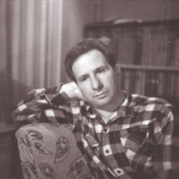

Пять вечеров
Александр Володин
Эта история произошла в Ленинграде, на одной из улиц, в одном из домов.
Началась она задолго до этих пяти вечеров и кончится еще нескоро. Зима, по вечерам валит снег. Он волнует сердце воспоминаниями о школьных каникулах, о встречах в парадном, о прошлых зимах…
Первый вечер
Эта история произошла в Ленинграде, на одной из улиц, в одном из домов.
Началась она задолго до этих пяти вечеров и кончится еще нескоро. Зима, по вечерам валит снег. Он волнует сердце воспоминаниями о школьных каникулах, о встречах в парадном, о прошлых зимах…

Зоя. Нет, это безумие, что я так себя веду. Только прошу, не истолкуй мое поведение как вообще легкую доступность ко мне.
Ильин. Ладно.
Зоя. Что — ладно?
Ильин. Не истолкую.
Зоя. Вредный, ты — это другое дело. (Пауза). А правда, как у нас все быстро произошло. Всего неделю назад мы еще друг друга не знали. И — вдруг. Прямо не верится. Правда, я какая-то безумная. Ты меня, наверно, презираешь.
Ильин. Что ты, наоборот.
Зоя (показывает Ильину журнал мод). Скажи, а такая женщина тебе нравится?
Ильин. Ничего.
Зоя. Эту манекенщицу больше всех снимают. Вот здесь она хорошая. А здесь плохая. А эту в последних журналах совсем перестали показывать, наверно, поругалась. А может быть, замуж вышла за обеспеченного. Одной-то вообще жить лучше. Мужчине надо то носки покупать, то мясо, то четвертинку. Вот, скажи, что такое любовь?
Ильин. Неизвестно.
Зоя. Любовь… это электрический ток. Ильин. Очень может быть.
Зоя. Не может быть, а точно. У тебя когда отпуск кончается?
Ильин. Скоро — ту-ту!.. Сколько я здесь не был, лет семнадцать? И вот интересно: какая-то вывеска, или афишная тумба, или аптека на углу - все точно такое же, как и прежде. Над этой аптекой моя первая любовь жила. Я у них до войны комнату снимал.
Зоя. Правда? Ой, как интересно! Расскажи про свою первую любовь. Я люблю, когда рассказывают про свою первую любовь…
Ильин. Она красавица была, теперь таких нет. Звезда. Ее подруги так и звали: «Звезда».
Зоя. Ну, я тоже не в последних ходила. Вообще я молоденькая - прелестная была. За мной такой человек ухаживал! Только он был пожилой. Мать меня взяла и отговорила. Тогда я сама за него мою подругу сосватала. Недавно ее встретила. Одета!.. А ведь это могла быть я.
Ильин. А я бы, пожалуй, сейчас зашел.
Зоя. Куда?
Ильин. А к ней.
Зоя. А я ее на дуэль вызову.
Ильин. Всю войну с ней переписывались. Издать — целый том.
Зоя. Что же вы тогда расстались, если она такая звезда?
Ильин. Не удовлетворил высоким идеалам.
…